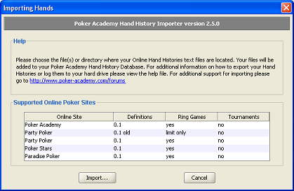
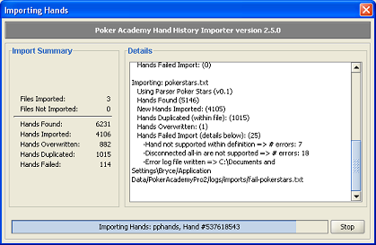

Hand History Importer

The Hand History Importer will import hands from the major Online Poker sites.
The importer will group your hands by the site and session they where played online, and
produce the same extensive stats as your Poker Academy hands. Imported hands
can also be played back in the same manner as the rest of the hands in your Hand History
Database.
Importing Hand Histories
Online Hand Histories must be read from a text file, typically on the computer's
hard drive. It is recommended that you place all of your online hand histories in a
seperate directory and copy / backup regularly. Poker Academy can scan a directory
and will import all hands into the database. The following Online Sites are currently supported:
- Party Poker
- Hand Histories can be configured to be saved on your hand drive.
This can be configured in Party Poker client's menu using
Options -> Hand History Configuration Options
- Poker Stars
- Hand Histories from the past 30 days can be saved to your hand drive. Within
the Poker Stars client's menu go to: Options -> Instant Hand History Options...
- Paradise Poker
- Hand Histories can be requested for your most recent 100 hands played. This
can be done from the Paradise Poker client using either the Options menu or the
Dealer Chips Tray.
Results

After an import is completed the summary results are displayed at the top of
the screen. The details panel will give more information about each file
that was imported, including the type of importer/parser used add the number of
hands found, new hands imported into the database, hands duplicated within the file,
hands that where overwritten/updated, and the hands that failed to be imported.
Limitations
Currently the importer does not support tournament hands, hands with
unsupported bet completion rules, or hands where a player is given
disconnect protection.